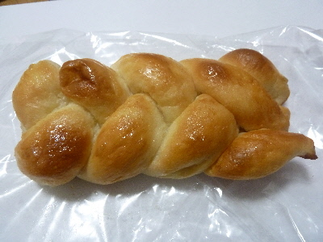
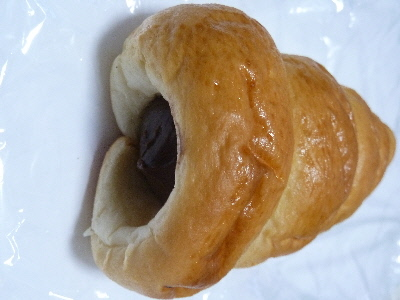
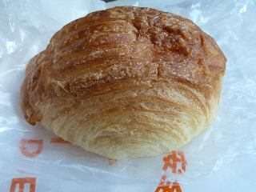
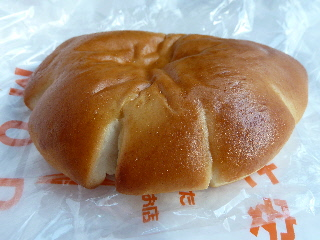
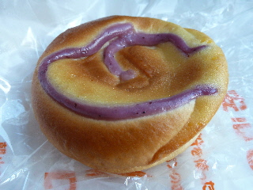
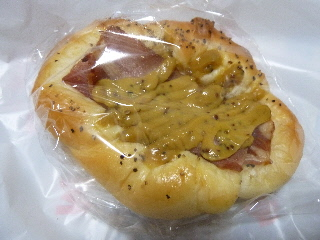
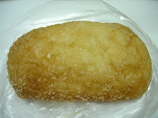
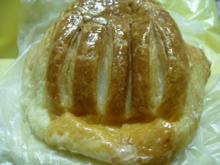
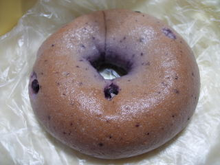

モーデのスウィートバターロール
2017/05/14
編んであるので、表面の甘い部分が多いロールパンです。

米粉パンらしい甘みのある味でした。
私はこれが一番米粉パンにあってる気がする。
（味覚の問題なので、気分によって変わりますが。）
島根県出雲市所原1642-2
2017/05/14
編んであるので、表面の甘い部分が多いロールパンです。

米粉パンらしい甘みのある味でした。
私はこれが一番米粉パンにあってる気がする。
（味覚の問題なので、気分によって変わりますが。）
2016/10/14
お米パンのコロネです。

モチモチの歯ごたえのコロネってなかなかないかも。
食べてて「なんかいつもと違う！」って思いました。
普段食べてるコロネと全然違うので、なんか不思議な感じがしました。こうゆうのも面白くていいですね。
2013/02/11
MODEは1店舗なくなっちゃいましたけど、こっちは頑張って欲しいです。

サックリフランス170円
デニッシュパンのようなクロワッサンのようなパンでした。
以前に食べた時とちょっと感じが変わった気がしました。

ジャムパン130円
甘い米粉パンと苺ジャム味が、なんとなく懐かしい感じの味でした。
ちょっと硬めのコッペパンっぽい感じかな。
こうゆうジャムパン好きです。

ブルーベリーのパン170円
これもジャムパン同様の甘いパンでした。
お昼過ぎに行ったせいか、おやつ向きのパンが多くお店にあった気がしました。
2012/09/02
マスタードたっぷりのパンですね。

見た目がちょっといまいちですが、味はどうでしょう？
マスタードはそんなに辛くはないんですが、量が多ですね。マスタードパンな感じでした。
パンが米粉でどっしりと重いので、辛さはマイルドになりました。
変わったパンでした。
2009/10/11
見た目が美味しそうな揚げパンでした。サクサクしてそうな衣がいいですね。

ここのパンはお米パンですが、小麦とのブレンドなので、お米風味が強くなく、普通にパンらしい味がするなって思いました。
パン生地の厚みが少ないので、もちもち感が少なかったのでよけいそう思ったかもしれません。
ポテトサラダ味がしっかりあって、美味しいお惣菜パンでした。
2009/6/14
朝お店に行った時は閉店していたんですが、夕方いったら開店していました。ここのお店はパンがなくなると閉店してしまうので、タイミングが良くないとパンが買えません。
お店にチラシが置いてあったんですが、35種類もパンがあるようです。でも実際行った時は、完売後の再オープンだったため、新しく出来上がったパンは5種類くらいしかありませんでした。でもお店か開いてただけでもラッキーです。
チラシには予約承りますって書いてあるんですが、普通に買い物の予約が出来るかは謎です。ちなみに電話は0853-48-9679です。遠くから行かれるかたは、せっかく行って閉まってたら超がっかりなので確認してみてください。
サックリフランスです。（お店にそう書いてあったんですが、自信ないです。）

デニッシュパンに砂糖が塗ってあって甘いパンです。もっちりとしたデニッシュで、バター味と砂糖味でお菓子っぽいパンでした。
こっちはブルーベリーベーグルです。

米粉パンなので普通のベーグルよりさらにモチモチなんですが、そんなに質量がないので、軽いです。甘いパンなので、ドーナッツみたいな感覚で食べれました。
2種類ともふっくらとしていて、柔らかでした。カテゴリー的には両方とも食事パンですが、甘いのでお菓子パンとして美味しくいただけました。
2009/5/16
チラシをみて知ったんですが、5/16に朝山にパン屋さんが出来ました。
だいぶ前に、地元の人達がパン屋を作るって記事を何かで読んだ事があったので、もう出来ているかと思っていたら、まだだったんですね。
地元の米粉を使った、安全安心なパンらしいです。
5/16から5/24の間はオープンフェアーをやっているようです。
住所は出雲市所原1642-2で、地図をみるとJA所原店ATMの横みたいです。
米粉パンといったら佐田町のカウベルを思い浮かべるんですが、縁が無くてまだ行った事がないんですよね～。早く南部のパン屋さんに買い物に行きたいです。